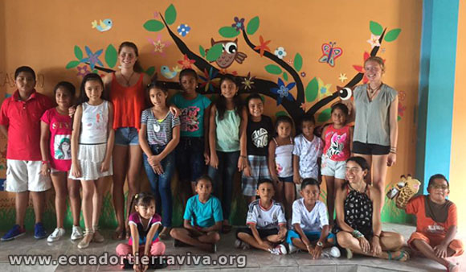
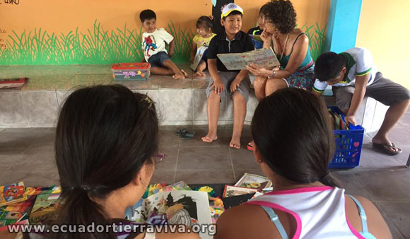
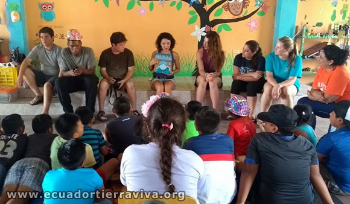
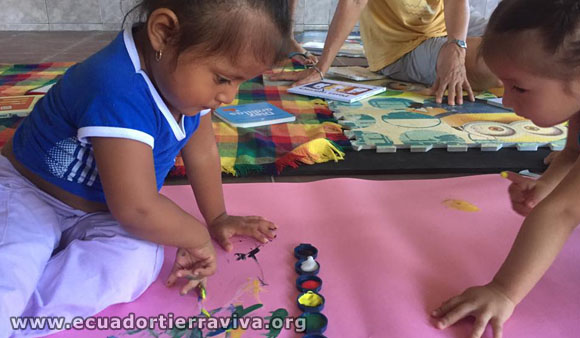
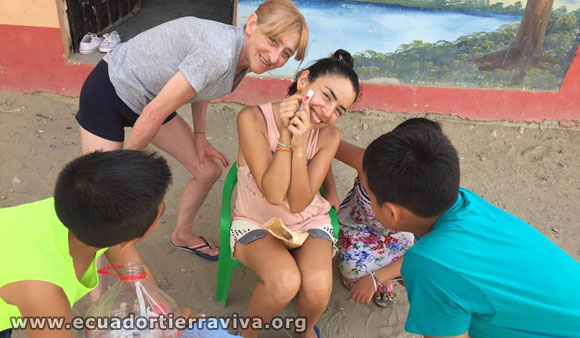
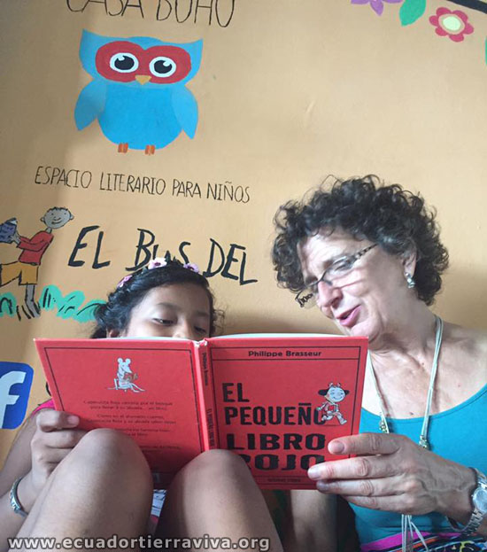
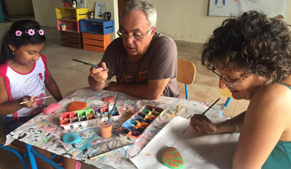
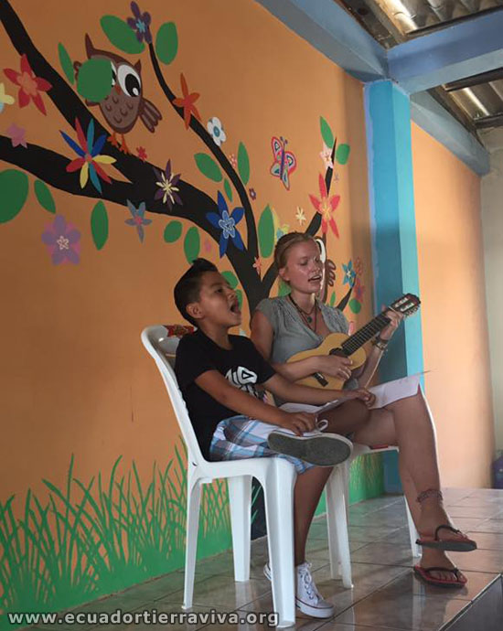
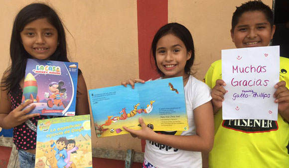
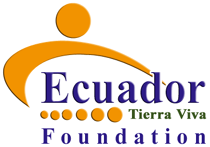

You can make a positive contribution to child literacy.
You can make a positive contribution to child literacy. You can make a positive contribution to child literacy.
You can make a positive contribution to child literacy. You can make a positive contribution to child literacy.
You can make a positive contribution to child literacy. Volunteer with books, Children, Education, Unique Volunteering Opportunity.
Volunteer with books, Children, Education, Unique Volunteering Opportunity.
Casa Buho, Machalilla
Who Are We?
ETV designed and developed The Book Bus (mobile library) project in Ecuador since in 2010, thanks to this experience in 2017 ETV is launching a new project called CASA BUHO to improve the reading and literacy skills for all the children of Machalilla town (located at the Machalilla National Park). Casa Buho was born from to the wonderful ideas, creativity and energy of our friend Valeria Saenz, who is the Director of the project.
We are looking for Spanish speakers volunteers reading mentors throughout the year. Our reading scheme compliments the children's school curriculum and emphasizes themes that will positively on their lives as they grow up. Mentoring the children to read will encourage them to progress beyond the words and numbers of the classroom and use books to develop their creativity, explore their surroundings and widen their view of the world.
Project placements start and finish on a Saturday with a minimum project commitment of four weeks. The longer you can commit, the greater the benefit to the children we support and the more you will get out of your Casa Buho experience.

Project aims and objectives for Machalilla in 2017
The Casa Buho aims to improve the reading and literacy skills of primary school children in the project area by providing free and regular access to enjoyable and challenging books. The Project is active year round.

Casa Buho activities
Casa Búho currently leads 4 programmes for promoting reading:
• “Mi tarde de Lectura” (My Reading Afternoon). We work with a group of schools in Machalilla and the sessions designed for elementary school children with ranges ages between 6 to and 12. This program is available for children after school with reading aloud being the practical of this initiative.

• “Bebés Búhos” (Baby Owls). We work with babies of an age range from 6 months to 2 years. As sooner a person is exposed to books and reading, the better the chances he/she has to become a good reader in the future. In parallel, we work with the child’s mother or legal guardian. This allows us to do more complete work making the child’s development at home easier.
• “Súper Lectores” (Super Readers). As part of this program Casa Búho lends books to children to be taken home and read them. Join our “ideas exchange” between the reading promoter and the children, the main topics that the child enjoyed will be discussed at the next session.• “English for Kids”. We believe that Machalilla is a developing touristic town and it can benefit greatly having English speakers to help tourists enjoy their stay in thist wonderful place.
Our future dream” Casa Búho is working towards developing a program where once a month, in Manta city, our work is replicated for the children of a local foundation that offers shelter to abused or abandoned children. This is a tough scenario to work with, however with love and patience Casa Búho could really cause a positive impact in the children’s live just staying there, sharing a book and getting closer to them through the magic of literature.

Casa Buho staff
- Project Coordinators
Our project Coordinators are educated, trained and experienced in their roles. They ensure that the children receive maximum benefit from the programme and that all staff and volunteer participation is a fulfilling and enjoyable experience.
- Volunteers (local and international)
We invite volunteers to help as reading mentors in all the activities outlined above. Reading mentors inspire the children to read and help them overcome any reading and/or writing difficulties they have during the activity. Volunteers must have a minimum Basic level of Spanish with the confidence to speak in public.
Project resources
- Project Director
- Project Orientation
- Books and Materials
- Volunteer accommodation at the Casa Buho hostel
- Support from Quito .
How the Volunteer programme works:
Volunteer profile
Volunteers must have at least a confident level of Basic Spanish to join the project, the project offers a valuable opportunity to strengthen your language skills. Volunteers will have the desire to work with children to improve their reading and writing skills.
Volunteer activities
- Mentoring children to read at our Casa Buho in the Machalilla town
- Running after-school reading clubs for children to attend any afternoon
- Helping run our Holiday Clubs for children during school holiday
- Helping local volunteers to work with Casa Buho
- 
Casa Buho volunteers act as reading mentors to children attending these schools and bring the joy of reading into the schools and their communities.
Volunteer support
Volunteers receive a formal project induction on arrival and work under the supervision of a Project Director. The project provides support at local level in the event of minor illness or accident. All volunteers must hold travel and health insurance to cover serious illness or accidents.

Volunteer accommodation
Accommodation is provided at the Casa de Voluntarios in Machalilla. There are double rooms with private bathrooms, a communal kitchen and dining area. The hostel is situated in a quiet part of town and is less than 1 block walk from the beach.
Eating in Machalilla
The Hostel has a well-equipped kitchen and self-catering is a popular option for our volunteers. It's cheap and fun to buy food locally and cook together as a group. Fresh food is available from the produce market and there's a well stocked supermarket in Puerto Lopez (10 min from Machalilla). Fresh fish is the local specialty! For those who like to eat out there are many choices of eateries in town from simple meals in the market to more upmarket restaurants for when you want to treat yourself.

Dates & Fees
- The project is available year round.
- Volunteers can join any Saturday, all projects start with an induction on Sunday afternoon
- Minimum stay is 1 month
- We request a donation of $20 per day
Application process
Before coming to volunteer in Ecuador you must send:
- Scan of your passport
- Dietary restrictions
- Allergies
- Spanish Level (confident basic level)
- Criminal background check and child abuse history report
- Copy of your health /accident insurance
Summary
Program includes
- Local project coordinator
- Project Orientation
- Project transport
- Accommodation
- Hot water
- Shared twin room with private bathroom
- Shared kitchen
- WiFi
Not included in the program
- Meals
- Transport from Quito / Guayaquil to Machalilla
- Visa is required for more than 3 months
- Insurance
- Tourist activities
- Laundry
We suggest you bring
- Cell phone with Ecuador network chip
- Sunscreen
- Repellent
Book Donations:
many volunteers like to donate books and materials to the project.
If you would like to provide children’s picture books (in Spanish only please) you can purchase them in Quito’s book shops such as Liberia Espanola and Libri Mundi.

For Further Information Please Call Us +593 994783976 or write an email to info@ecuador-tierraviva.org
If you want to support our Project please contact us or if you want to send a donation click here
OUR PROJECTS

Monitoring Wildlife and bird studies in the Amazon Jungle
Tabs
Volunteer Testimonials
-
Never having worked as a teacher before, this was a new but very rich experience for me. It is a small effort on my part, but it brings great joy and satisfaction. All in all, we had an amazing time.!
-
The atmosphere here is friendly, fun, there's always something new happening, especially when there are new volunteers. My payoff is a smile and a simple "thank you"
-
You have to have a passion for educating kids, most of all, and to help inspire their creativity and build their confidence as young leaders.
Volunteering Projects in Ecuador
